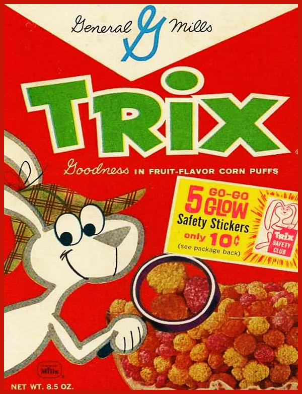
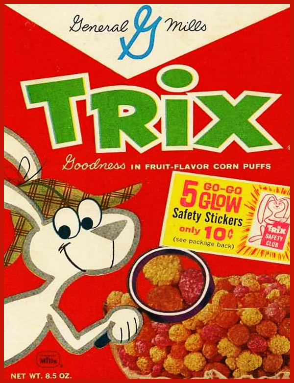

This Trix is for Kids
The Cap Loves His Crunch
Adult version
Tony and His Great Flakes
Adult version
The Count and His Buck Teeth
Adult boxart illustrated by Guillermo Fajardo
This Trix is for Kids
The Cap Loves His Crunch
Tony and His Great Flakes
The Count and His Buck Teeth
©Mike Tonder